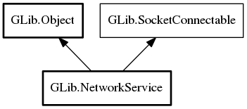

NetworkService
Object Hierarchy:
Description:
Like NetworkAddress does with hostnames, NetworkService provides an easy way to resolve a SRV record, and then attempt to connect to one of the hosts that implements that service, handling service priority/weighting, multiple IP addresses, and multiple address families.
See SrvTarget for more information about SRV records, and see SocketConnectable for and example of using the connectable interface.
Namespace: GLib
Package: gio-2.0
Content:
Properties:
Creation methods:
Methods:
Inherited Members:
All known members inherited from class GLib.Object

All known members inherited from interface GLib.SocketConnectable